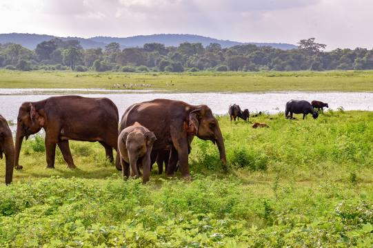
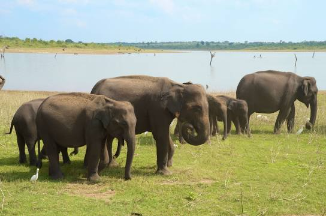

Plan Your Visit
Yala National Park Safari
Yala National Park is the most visited and second largest national park in Sri Lanka, bordering the Indian Ocean. The park consists of five blocks, two of which are now open to the public, and also adjoining parks. The blocks have individual names such as, Ruhuna National Park, and Kumana National Park or 'Yala East' for the adjoining area. It is situated in the southeast region of the country, and lies in Southern Province and Uva Province. The park covers 979 square kilometres and is located about 300 kilometres from Colombo. Yala was designated as a wildlife sanctuary in 1900, and, along with Wilpattu was one of the first two national parks in Sri Lanka, having been designated in 1938. The park is best known for its variety of wild animals. It is important for the conservation of Sri Lankan elephants, Sri Lankan leopards and aquatic birds. There are six national parks and three wildlife sanctuaries in the vicinity of Yala. Among the largest is Lunugamvehera National Park. The park is situated in the dry semi-arid climatic region and rain is received mainly during the northeast monsoon. Wikipedia
Sigiriya

Sigiriya, also called Lion Rock or Lion Mountain, site in central Sri Lanka consisting of the ruins of an ancient stronghold that was built in the late 5th century CE on a remarkable monolithic rock pillar. The rock, which is so steep that its top overhangs the sides, rises to an elevation of 1,144 feet (349 metres) above sea level and is some 600 feet (180 metres) above the surrounding plain. The Sinhalese king Kashyapa I (reigned 477–495) built a palace in the shape of a monumental lion on the several acres of ground at the summit, intending it to be a safeguard against his enemies. However, the king was defeated in 495, and the palace fell into ruin. The site soon became a pilgrimage destination, however, and it is now a popular tourist spot. Visitors begin the final ascent to the top through the open paws of the lion, one of the few remaining portions of the palace that are still intact. Also notable are 21 rock paintings of apsaras (celestial singers and dancers). Sigiriya was designated a UNESCO World Heritage site in 1982. Wikipedia
Dambulla Royal Cave Temple and Golden Temple

Dambulla cave temple also known as the Golden Temple of Dambulla is a World Heritage Site in Sri Lanka, situated in the central part of the country. This site is situated 148 kilometres east of Colombo, 72 kilometres north of Kandy and 43 km north of Matale Dambulla is the largest and best-preserved cave temple complex in Sri Lanka. The rock towers 160 m over the surrounding plains. There are more than 80 documented caves in the surrounding area. Major attractions are spread over five caves, which contain statues and paintings. These paintings and statues are related to Gautama Buddha and his life. There are a total of 153 Buddha statues, three statues of Sri Lankan kings and four statues of gods and goddesses. The latter include Vishnu and the Ganesha. The murals cover an area of 2,100 square metres. Depictions on the walls of the caves include the temptation by the demon Mara, and Buddha's first sermon. Prehistoric Sri Lankans would have lived in these cave complexes before the arrival of Buddhism in Sri Lanka as there are burial sites with human skeletons about 2700 years old in this area, at Ibbankatuwa near the Dambulla cave complexes. Wikipedia
Temple of the Sacred Tooth Relic
Temple of the Sacred Tooth Relic or Sri Dalada Maligawa; commonly known as the ශ්රී දළදා මාළිගාව, is a Buddhist temple in Kandy, Sri Lanka. It is located in the royal palace complex of the former Kingdom of Kandy, which houses the relic of the tooth of the Buddha. Since ancient times, the relic has played an important role in local politics because it is believed that whoever holds the relic holds the governance of the country. The relic was historically held by Sinhalese kings. The temple of the tooth is a World Heritage Site mainly due to the temple and the relic. Bhikkhus of the two particular chapters, the Malwathu chapters and Asgiri chapters conduct daily worship in the inner chamber of the temple. Rituals are performed three times daily: at dawn, at noon, and in the evenings. On Wednesdays, there is a symbolic bathing of the relic with a herbal preparation made from scented water and fragrant flowers called Nanumura Mangallaya; this holy water is believed to contain healing powers and is distributed to those present. The temple sustained damage from bombings by Janatha Vimukthi Peramuna in 1989, and by Liberation Tigers of Tamil Eelam in 1998. Wikipedia
Sri Pada / Adam's Peak
Adam's Peak is a 2,243 m tall conical mountain located in central Sri Lanka. It is well known for the Sri Pada, i.e., "sacred footprint", a 1.8 m rock formation near the summit, which in Buddhist tradition is held to be the footprint of the Buddha, in Hindu tradition that of Hanuman or Shiva, i.e., "Mountain of Shiva's Light", and in some Islamic and Christian traditions that of Adam, or that of St. Thomas. Wikipedia
Galle Dutch Fort


Galle Fort, in the Bay of Galle on the southwest coast of Sri Lanka, was built first in 1588 by the Portuguese, then extensively fortified by the Dutch during the 17th century from 1649 onwards. It is a historical, archaeological and architectural heritage monument, which even after more than 432 years maintains a polished appearance, due to extensive reconstruction work done by Archaeological Department of Sri Lanka. The fort has a colourful history, and today has a multi-ethnic and multi-religious population. The Sri Lankan government and many Dutch people who still own some of the properties inside the fort are looking at making this one of the modern wonders of the world. The heritage value of the fort has been recognized by the UNESCO and the site has been inscribed as a cultural heritage UNESCO World Heritage Site under criteria iv, for its unique exposition of "an urban ensemble which illustrates the interaction of European architecture and South Asian traditions from the 16th to the 19th centuries." The Galle Fort, also known as the Dutch Fort or the "Ramparts of Galle", withstood the Boxing Day tsunami which damaged part of coastal area Galle town. Wikipedia
Udawalawe National Park Safari
 Udawalawe National Park is a national park on the boundary of Sabaragamuwa and Uva Provinces in Sri Lanka. The park was created to provide a sanctuary for wild animals displaced by the construction of the Udawalawe Reservoir on the Walawe River, as well as to protect the catchment of the reservoir. The reserve covers 30,821 hectares of land area and was established on 30 June 1972. Before the designation of the national park, the area was used for shifting cultivation. The farmers were gradually removed once the national park was declared. The park is 165 kilometres from Colombo. Udawalawe is an important habitat for water birds and Sri Lankan elephants. It is a popular tourist destination and the third-most visited park in the country. Wikipedia
Nine Arches Bridge
The Nine Arch Bridge also called the Bridge in the Sky, is a viaduct bridge in Sri Lanka. It is one of the best examples of colonial-era railway construction in the country. The construction of the bridge is generally attributed to a local Ceylonese builder, P. K. Appuhami, in consultation with British engineers. The chief designer and project manager of the 'upcountry railway line of Ceylon' project was D. J. Wimalasurendra, a distinguished Ceylonese engineer and inventor. The designer of the viaduct was Harold Cuthbert Marwood of Railway Construction Department of Ceylon Government Railway. The 1923 report titled "Construction of a Concrete Railway Viaduct in Ceylon" published by the Engineering Association of Ceylon has details of all the records including the plans and drawings. It is located in Demodara, between Ella and Demodara railway stations. The surrounding area has seen a steady increase of tourism due to the bridge's architectural ingenuity and the profuse greenery in the nearby hillsides. Wikipedia
Kandy Lake
Kandy Lake, also known as Kiri Muhuda or the Sea of Milk, is an artificial lake in the heart of the hill city of Kandy, Sri Lanka, built in 1807 by King Sri Wickrama Rajasinghe next to the Temple of the Tooth. Over the years, it was reduced in size. It is a protected lake, with fishing banned. Wikipedia
Ruwanweli Maha Seya (රුවැන්වැලි මහා සෑය)
The Ruwanweli Maha Seya, also known as the Mahathupa is a stupa in Anuradhapura, Sri Lanka. Two quarts or one Dona of the Buddha's relics are enshrined in the stupa, making it the largest collection of his relics anywhere. It was built by Sinhalese King Dutugemunu in c. 140 B.C., who became king of Sri Lanka after a war in which the Chola King Elāra was defeated. It is also known as Swarnamali Seya, Svaṇṇamāli Mahaceti and Rathnamali Seya. This is one of the "Solosmasthana" and the "Atamasthana". The stupa is one of the world's tallest ancient monuments, standing at 103 m and with a circumference of 290 m. The original stupa had been about 55 m in height and was renovated by many kings. The Kaunghmudaw Pagoda in Sagaing, Myanmar is modelled after this stupa The Mahavamsa contains a detailed account on the construction and the opening ceremony of the stupa. The stupa was covered by jungle as of the 19th century. After fund raising efforts by a bhikkhu, it was renovated in the early 20th century. Wikipedia
Baker's Falls
Baker's Falls is a famous waterfall in Sri Lanka. It is located in the Horton Plains National Park, on a tributary of the Belihul Oya. The height of the Baker's waterfalls is 20 metres. The falls were named after British explorer and big game hunter, Sir Samuel Baker. Many Rhododendron ]and Fern bushes can be seen around the waterfall. Wikipedia
Nagadeepa Purana Raja Maha Viharaya | නාගදීප පුරාණ රජ මහා විහාරය
Nagadeepa Purana Vihara is an ancient Buddhist temple situated in Jaffna district of Northern Province, Sri Lanka. It is among the country's sixteen holiest Buddhist shrines. According to contemporary history, the Gautama Buddha visited the site after five years of attaining Enlightenment to settle the dispute between two warring Naga kings, Chulodara and Mahodara. Ancient history according to the Mahavamsa chronicles and the Tamil Buddhist epic Manimekalai mentions a gem-studded throne and a stone with the Buddha’s footprint at the island Nainativu, which pilgrims from India visited. Wikipedia
Aberdeen Waterfall
Aberdeen Falls is a 98 m high waterfall on the Kehelgamu Oya near Ginigathena, in the Nuwara Eliya District of Sri Lanka. Aberdeen is named after Aberdeen, the third largest city in Scotland and the capital of Aberdeenshire. Kehelgamu Oya is a major tributary of the Kelani River. To reach Aberdeen Falls from Ginigathena town, one then must proceed along Ambatale Road up to the Buddha statue at the end of the road. Then one should park their vehicle and walk about 1.2 km along the road. Bathing in the middle of the pool and swimming to the middle has caused death to swimmers in the past. This waterfall is covered with a big stone complex behind. The waterfall is ranked as the 18th highest on the Island. Wikipedia
Shree Thirukoneswaram Kovil
Koneswaram temple of Trincomalee or Thirukonamalai Konesar Temple – The Temple of the Thousand Pillars and Dakshina-Then Kailasam is a classical-medieval Hindu temple complex in Trincomalee, a Hindu religious pilgrimage centre in Eastern Province, Sri Lanka. The most sacred of the Pancha Ishwarams of Sri Lanka, it was built significantly during the reign of the early Cholas and the Five Dravidians of the Early Pandyan Kingdom on top of Konesar Malai, a promontory overlooking Trincomalee District, Gokarna bay and the Indian Ocean. Its Pallava, Chola, Pandyan and Jaffna design reflect a continual Tamil Saivite influence in the Vannimai region from the classical period. The monument contains its main shrine to Shiva in the form Kona-Eiswara, shortened to Konesar. Connected at the mouth of the Mahavilli Ganga River to the footprint of Shiva at Sivan Oli Padam Malai at the river's source, the temple symbolically crowns the flow of the Ganges River from Shiva's head of Mount Kailash to his feet. Wikipedia